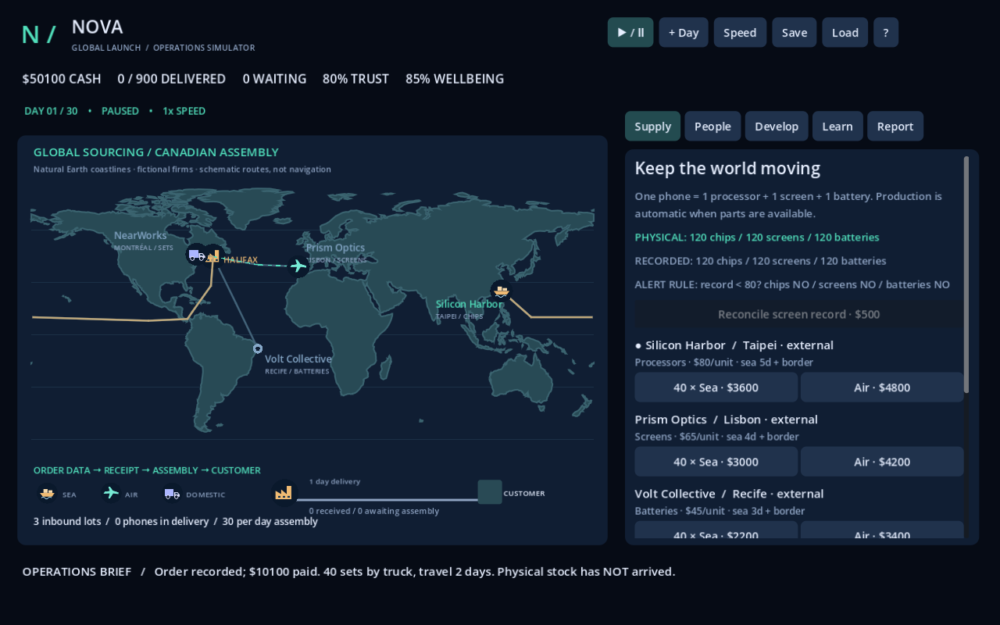

Nova.
Global Launch.
Build the next phone. Source its parts, hire expertise and deliver on your promises when the supply chain changes.
No installation or account needed for browser play. Best on a laptop or Chromebook with a current browser supporting WebGL 2. First load downloads about 37 MB.
Your first mission
- Open the game and begin in Learn. Follow the seven-step introduction, including a real order and one day of operations.
- Choose Classroom for comparable conditions or Random for a seeded replay. Scroll the right-hand panel to see the scenario choices.
- Deliver 900 phones in 30 days. Retain at least 65 trust, 60 wellbeing and nonnegative cash. Use + Day to take your time.
- Complete the practice checks in Learn. Write your explanations in Report and choose Export answers and decision report to download a text file for your teacher.
Save keeps progress in this browser on this device. Clearing site data, using private browsing or changing computers can remove access to it. Download your report before leaving. No answers are uploaded to a teacher or server.
What you will practise
Separate who performs work from where it happens. Compare outsourcing, insourcing, offshoring and reshoring. Trace goods, data and money, diagnose a bottleneck, respond to disruption and justify a decision for different stakeholders.
Game profit is one outcome. Your explanation and ability to apply the ideas to a new case provide the learning evidence.
Open the project on a school computer
- Download the ZIP above and extract the entire folder.
- Open Godot 4.6.2 Standard, choose Import, and select the extracted
project.godot. - Wait for asset import, then press F5. No export templates are needed to run it inside Godot.
The ZIP contains the editable project, artwork, map data, tests, instructions and teaching guide. Godot itself is not included. If installing Godot is not available at school, use the browser link instead.
Browser support and troubleshooting
Use an up-to-date Chrome, Edge or Firefox browser with WebGL 2 enabled. If loading fails, check whether your school allows GitHub Pages and WebAssembly. A laptop screen is recommended; this prototype has not been redesigned for phone-sized screens. Browser downloads may need school permission.
All firms, prices, routes, lead times and event impacts are invented teaching examples. The basemap uses Natural Earth coastlines. No textbook pages or lesson slides are included.